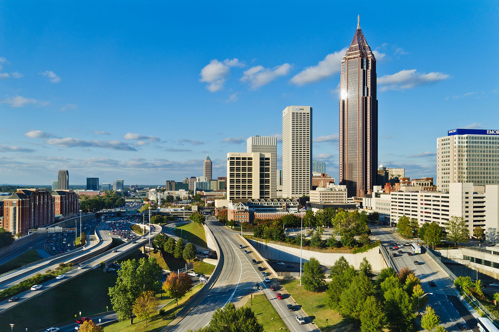

Atlanta, Georgia
Mix Southern hospitality with a vibrant cultural scene and critical historical happenings—Atlanta
offers a peculiar combination. There are plenty of must-visiting civil rights landmarks in the city,
education regarding what exactly transpired in the American Civil War, and hastening arts and
culinary scenes. Pay a visit to the Martin Luther King Jr. It contains the birth home of Dr. King
and the Ebenezer Baptist Church where he preached. The National Center for Civil and Human Rights
examines the history and the existing struggle of civil rights in the US and the world. This city
also sports a very impressive arts scene, boasting world-class museums like the High Museum of Art
and the Atlanta History Center, in addition to a very active performing arts scene. The diverse
dining scene encompasses everything from traditional Southern cuisine to more innovative places that
offer globally inspired tastes. Join Atlanta for an outdoor recreation spree: hike, bike, or visit
the Georgia Aquarium, the world's biggest aquarium.
.jpeg) Tampa, Florida
Tampa is a lively town that contains amusement parks, museums, historic Ybor City, and legendary
food. Beaches, ballparks, and cultural spots are blended into an active nightlife scene of great
variety in entertainment. One of the most popular theme parks in this area is Busch Gardens Tampa
Bay, featuring some of the world's top roller coasters emceed alongside a 335-acre zoo. The Florida
Aquarium offers a look at the Gulf Coast's robust marine life. The Tampa Museum of Art features a
collection of contemporary art and changing exhibitions. Founded by manufacturers of cigars in the
late 19th century, Ybor City is now a lively district known for its nightlife, restaurants, and
historic architecture. One of the things that will strike you about Tampa is its food—Cuban,
Spanish, and Italian influences blend into a unique culinary scene. The city has also become very
popular as a cruise ship departure port and is therefore highly convenient for starting your
exploration of the Caribbean.
Tampa, Florida
Tampa is a lively town that contains amusement parks, museums, historic Ybor City, and legendary
food. Beaches, ballparks, and cultural spots are blended into an active nightlife scene of great
variety in entertainment. One of the most popular theme parks in this area is Busch Gardens Tampa
Bay, featuring some of the world's top roller coasters emceed alongside a 335-acre zoo. The Florida
Aquarium offers a look at the Gulf Coast's robust marine life. The Tampa Museum of Art features a
collection of contemporary art and changing exhibitions. Founded by manufacturers of cigars in the
late 19th century, Ybor City is now a lively district known for its nightlife, restaurants, and
historic architecture. One of the things that will strike you about Tampa is its food—Cuban,
Spanish, and Italian influences blend into a unique culinary scene. The city has also become very
popular as a cruise ship departure port and is therefore highly convenient for starting your
exploration of the Caribbean.
 Phoenix, Arizona
Situated in the middle of the desert, Phoenix is an oasis that truly bursts forth with resorts,
artistic expressions, cultural diversity, and natural wonders, from the Grand Canyon to all other
outdoor activities like hiking, rock climbing, hot air balloon rides, or the Sonoran Desert. But
probably one of its number one attractions would be the resorts themselves: full-service fine
dining, world-class spas, and championship golf courses. The city's art scene is equally impressive,
with several museums, art galleries, and public art installations that host national and
international artists. The position of Phoenix makes it excellent for exploring the State's natural
beauty since the Grand Canyon is only a few hours' drive from here. It's also a gateway to other
destination hot spots: Sedona, with its beautiful red rock formations, and Scottsdale, known for
high-end shopping and dining opportunities.
Phoenix, Arizona
Situated in the middle of the desert, Phoenix is an oasis that truly bursts forth with resorts,
artistic expressions, cultural diversity, and natural wonders, from the Grand Canyon to all other
outdoor activities like hiking, rock climbing, hot air balloon rides, or the Sonoran Desert. But
probably one of its number one attractions would be the resorts themselves: full-service fine
dining, world-class spas, and championship golf courses. The city's art scene is equally impressive,
with several museums, art galleries, and public art installations that host national and
international artists. The position of Phoenix makes it excellent for exploring the State's natural
beauty since the Grand Canyon is only a few hours' drive from here. It's also a gateway to other
destination hot spots: Sedona, with its beautiful red rock formations, and Scottsdale, known for
high-end shopping and dining opportunities.
.jpeg) San Diego, California
San Diego is known for the beauty of its beaches, attractions suited to families, and outdoor
activities. This city is host to parks, museums, and historical sites for roaming all around; some
examples are the San Diego Zoo and the USS Midway Museum. The San Diego Zoo contains over 3,700
animals from 650-plus species, of which many are endangered and threatened. The USS Midway Museum
offers unparalleled insight into the history of naval aviation. Apprehension apprehended also
provides water sports, hiking trails, and other outdoor activities for adventure enthusiasts.
Coupled with its Mediterranean climate, it offers the perfect environment for all such activities
within the beauty of San Francisco Bay and the Pacific Ocean. Based in San Diego, there is an
amazing diversity of neighborhoods and places to eat, buy, and have fun, from the historic Gaslamp
Quarter to trendy La Jolla.
San Diego, California
San Diego is known for the beauty of its beaches, attractions suited to families, and outdoor
activities. This city is host to parks, museums, and historical sites for roaming all around; some
examples are the San Diego Zoo and the USS Midway Museum. The San Diego Zoo contains over 3,700
animals from 650-plus species, of which many are endangered and threatened. The USS Midway Museum
offers unparalleled insight into the history of naval aviation. Apprehension apprehended also
provides water sports, hiking trails, and other outdoor activities for adventure enthusiasts.
Coupled with its Mediterranean climate, it offers the perfect environment for all such activities
within the beauty of San Francisco Bay and the Pacific Ocean. Based in San Diego, there is an
amazing diversity of neighborhoods and places to eat, buy, and have fun, from the historic Gaslamp
Quarter to trendy La Jolla.
.jpeg) San Francisco, California
This iconic city is known for its cable cars, the Golden Gate Bridge, and diverse neighborhoods. We
can discover famous locations like Alcatraz Island, the Painted Ladies, or the Palace of Fine Arts,
and explore the vibrant arts and food scenes in the city. Alcatraz Island offers tours that detail a
great deal of its history after serving as a federal prison years ago. The Painted Ladies are a line
of multicolored Victorian houses that have become very famous on camera. Across from this is the
Palace of Fine Arts, an impressive instance of Roman and Greek architecture with its ornate columns
and domed rotunda. On the other hand, within San Francisco's many explores, diverse neighborhoods
range from the hipster-chic Mission District to the LGBTQ+ hub of the Castro. The beautiful natural
setting of the city also makes it an ideal place for outdoor enthusiasts, with the San Francisco Bay
and the Pacific Ocean, to spend their time in activities like hiking, biking, and sailing.
San Francisco, California
This iconic city is known for its cable cars, the Golden Gate Bridge, and diverse neighborhoods. We
can discover famous locations like Alcatraz Island, the Painted Ladies, or the Palace of Fine Arts,
and explore the vibrant arts and food scenes in the city. Alcatraz Island offers tours that detail a
great deal of its history after serving as a federal prison years ago. The Painted Ladies are a line
of multicolored Victorian houses that have become very famous on camera. Across from this is the
Palace of Fine Arts, an impressive instance of Roman and Greek architecture with its ornate columns
and domed rotunda. On the other hand, within San Francisco's many explores, diverse neighborhoods
range from the hipster-chic Mission District to the LGBTQ+ hub of the Castro. The beautiful natural
setting of the city also makes it an ideal place for outdoor enthusiasts, with the San Francisco Bay
and the Pacific Ocean, to spend their time in activities like hiking, biking, and sailing.